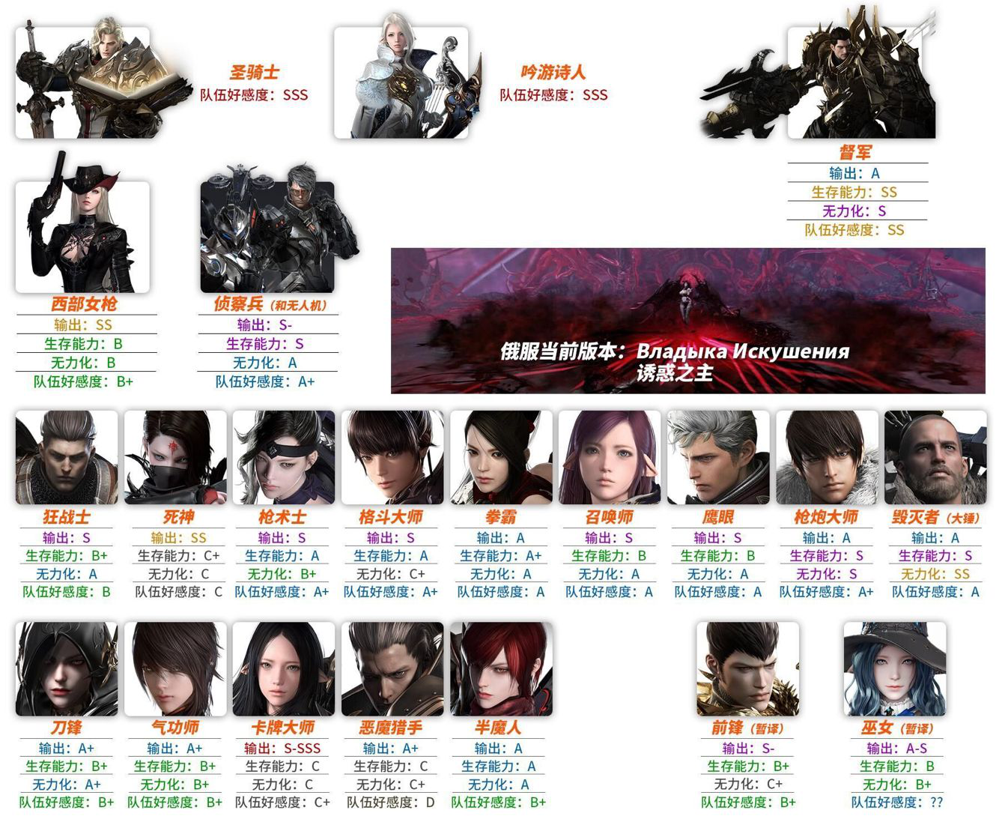
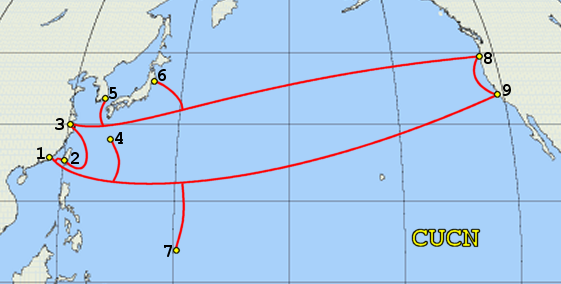
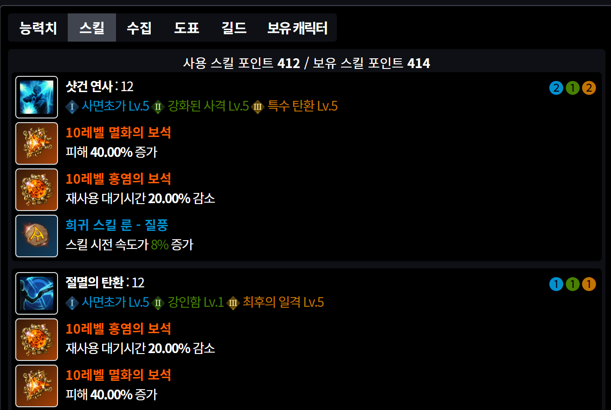
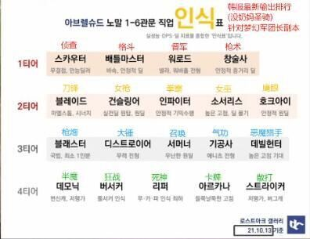

失落的方舟美服简易百科(0.0.5)
★ 欢迎选择北美西部大区的玩家加入QQ群 (473603021) !
★★ 本百科为一家之言，欢迎指正。如有利益冲突，恕不接受反驳。
基础介绍
方舟各个服务器优劣势比较
★ 游戏活动时间经过数次优化，时差已经基本不再成为困扰，故不提及。-
韩服
- 优点：低延迟，可以自由买卖金币（RMT），毫无疑问更新最快的服务器，可以第一时间体验到游戏最新的内容。
- 缺点：无汉化，极高的入门门槛，需要专线加速器，需要韩国手机号不定时接受验证码才能登陆，账号财产安全没有保障。
- 优点：低延迟，优秀的日文配音，由于日文和中文文字的相似性，即使不需要汉化也能读懂大部分游戏文字，很好的游戏福利，很快的游戏版本更新速度。脚本工作室全部被官方封禁。
- 缺点：无汉化，游戏玩家较少，有时会排不到副本队伍，相对高的入门门槛（需要专线IP加速器，起步价99），普通加速器会被封号。官方禁止任何形式的金币交易（RMT），如果被发现会被立即封号（近期封号力度下降，但不排除秋后算账的可能性），如果被发现是日本海外IP，也会被封号，而且根本没有申诉的机会。由于日本服务器的排外性，有些日本玩家队伍会打出仅招收日本人，需要用日语打招呼。如果需要重度氪金，账号财产安全没有保障。
- 优点：有最好的汉化，可以自由买卖金币（RMT），游戏更新进度快，仅次于韩服，门槛低，国人多，玩家群体大。
- 缺点：延迟较高，俄语语音很难适应，新手较难追赶进度，由于收益高，导致搬砖党大量涌入俄服，玩家两级分化严重，游戏环境较差。
- 优点：低延迟，有繁体中文。
- 缺点：没有具体开服日期，代理商无法有效遏制工作室。
- 优点：较大概率永远无法开放。
- 缺点：较大概率永远无法开放。
- 优点：未来可能会有汉化，可以自由买卖金币（RMT），运营商为亚马逊游戏，技术靠谱体量大，第一次代理游戏，不至于自己砸自己招牌。由于欧美玩家的特性，氪金程度和内容相比其他服务器会有显著减少（所有商城物品都可以通过游戏内金币兑换）。凭借着运营商和steam的体量和欧美玩家群体的数量，未来不出意外将成为人数最多最火爆的服务器。脚本工作室全部被官方封禁。
- 缺点：暂时没有汉化，延迟较高。版本落后，一切从头开始。
- 必来加速器：现在个人在用日服专线，客服/技术优秀，延迟低。
- 玲珑加速器：之前用过，延迟低。但目前还未支持方舟美服,公测后应该会支持。
- 其他加速器如果支持失落的方舟美服也可以选择。 ★ 目前由于美服不封IP，所有加速器无需选择专线。
- 方舟是一个优化成熟的游戏，近几年的游戏笔记本都可以畅玩。
- 操作系统：Windows10 和 Windows11 系统都可以运行游戏。
- 显示器：方舟支持21：9比例，购买宽屏显示器并使用21：9比例进行游戏会有更好的体验。
- 显卡：1080P需要GTX1050以上的显卡，1440P需要RTX2070以上的显卡，4K需要RTX2080以上的显卡。
- CPU: intel i5以上，推荐i7以上。
- 内存: 16G以上。 ★ RTX3080Ti玩方舟选项全最高显卡占用基本在70%左右，如果显卡达标，更推荐升级CPU。
- 1. 选择通过Steam购买：Steam服锁国区，需要将Steam区域切换成美服，具体操作可以谷歌百度，如有必要，群主将制作视频教程。
- 2. 选择通过亚马逊购买：https://www.bilibili.com/video/BV1q34y1m787?share_source=copy_web
- 如果你对绝版时装没有需求，那么强烈建议你只买最便宜的14.99美元的BRONZE(青铜)礼包。礼包主要包括在公测时提前三天进入游戏和一只宠物（必要）。 ★ 不建议通过切换低价区用更低的价格购买礼包。这是官方和steam严打的行为。
- 美服版本的职业平衡在beta测试时已经是非常新的版本，公测后，职业平衡补丁将紧随韩服。如果你是一个休闲党/信仰党/外观党，你可以选择任何一个你喜欢的职业，毕竟强弱也只是韩服一个补丁的问题。
- 作者仍将介绍所有职业并且推荐一部分新手友好/不友好的职业，如果想详细了解一个职业的特性和输出循环，建议视频网站寻找一下想玩的职业的视频/攻略。
- 美服beta测试中，开放了整个T1的内容（Rohendal），在开放T3之前（后文详述），可以通过新建角色（需要花钱直升）来体验所有职业并选择要成为大号的职业。
- 作者将通过韩服军团长副本职业排行，韩服所有服务器的各职业人数，俄服职业排行和日服我自己的体验来进行职业推荐。
- 由于本百科为新手向，作者将仅介绍公测时首发的职业（官网Classes中含有的职业），不要相信公测时会包含所有职业的谣言。 
- 作者将先通过俄服职业排行榜来介绍方舟中站在所有职业头上的3个功能性（不可替代）职业，分别是吟游诗人（BARD），圣骑士（PALADIN），督军（GUNLANCER）。
- 吟游诗人（BARD）：韩服人数最多的职业，永远的奶妈永远的神，开荒必组职业，8人副本7=1永远是等一个奶妈。提升团队攻击，并拥有最强大的团队回血能力和给队友加护盾的能力。
- 圣骑士（PALADIN）：跟吟游诗人是唯二的辅助职业，回血和加盾能力弱于吟游诗人，但是能为队友提供更稳定的攻击加成，自己输出也比奶妈高。甚至可以自己成为输出（审判流，不推荐新手尝试）。
- 督军（GUNLANCER）：拥有全职业唯一的嘲讽技能，可以强行打断boss的一些招式。可以给自己和队友提供护盾，自身强大到不需要走位硬吃boss技能，可以提供无力化支援，同时还拥有不低的输出。流派分为蓝督军（战斗姿态）和红督军（孤独骑士）。
- 上图为韩服军团长版本的职业排名，并不适用于公测时的美服，只反应游戏超大后期的职业强度和职业受欢迎程度，美服大概需要1到2年的时间到达这个版本。接下来作者将以此为引子逐个介绍其他输出职业。
- 女巫（SORCERESS）新晋的热门输出职业，在韩服俄服很受欢迎，纯法师，带瞬移，输出极高。喜欢法师的玩家可以首发。两个流派为点火流（爆发）和回流流（续航），加点相关具体我没玩过就不多做评价了。
- 西部女枪（GUNSLINGER）：韩服玩家人数第二多的热门职业，玩家人数仅次于吟游诗人（BARD）的职业，拥有手枪形态，霰弹枪形态和狙击枪形态。外表靓丽，形态飘逸，输出爆炸，经过韩服几轮的伤害削弱，仍然拥有不俗的输出和受欢迎程度。在手枪形态下拥有灵活的位移并为全队提供暴击率加成，
在霰弹枪模式下技能可以提供无力化，而在狙击枪形态下可以进行远程输出。女枪操作难度较大，需要一定的装备支持，且需要频繁切枪并且在手枪形态下不断给怪物挂上暴击buff，并不推荐新手首发。
女枪流派分为三枪流和双枪流（手枪+霰弹枪），韩服主流为三枪流，女枪三枪流加点。 - 狂战士（BERSERKER）：简单粗暴的战士系职业，投入和输出成正比，对新手非常友好的职业，需要通过普通技能进行战斗资源的累计进入狂暴状态，觉醒一刀拥有极高的爆发，可以跳过boss一些难处理的机制。缺点是全职业为数不多不能给队友提供增伤的职业。狂战士主流加点。
- 拳霸（SCRAPPER）：全职业打击感最强的职业，没有蓝条，不会缺蓝，不需要装备成型也能有很好的输出和游戏体验，后期版本也拥有不俗的输出，强力推荐新手首发。拳霸有两个流派分别为绿拳霸（冲击流）和黄拳霸（体术流），玩家人数大概是50%对50%，绿拳霸强调单次高攻击，黄拳霸强调攻击次数出拳停不下来，t3开放之前推荐选择绿拳霸，之后可以依据个人爱好选择绿拳霸或者黄拳霸。
绿拳霸加点。 黄拳霸加点。 - 格斗大师（WARDANCER）：职业下限很低，上限非常高的职业。在大后期版本中非常强势，如果追求极限输出，需要非常细腻的操作，不推荐新手选择。可以为团队提供移速和暴击的加成，非常受队友欢迎。
格斗大师主流加点为初心流。 - 召唤师（SUMMONER）：可可爱爱的召唤系职业，并不是真正意义上的法师职业（女巫才是，但没有出），召唤亲友团群殴boss，操作简单，输出不低，喜欢安逸输出的新手可以选择，主力输出技能远古之矛需要原地站桩吟唱。 召唤师加点。
- 鹰眼（SHARPSHOOTER）：游戏中唯一拿弓的职业，还有一只老鹰常伴身边。经过韩服的数次加强，输出能力已经跻身前列，不再是下水道三杰之一。需要注意的时，鹰眼并不是一个远程输出职业，需要靠近boss释放剑刃风暴和双连斩。 鹰眼加点。
- 枪炮师（ARTILLERIST）：中规中矩的输出职业，输出安逸，自带护盾，生存能力优秀，可以坐上固定炮台用激光轰击boss。在处理一些位移多的boss时会比较头痛。 枪炮师加点。
- 刀锋（DEATHBLADE）：刀锋不是刺客系职业中真正的刺客，还没出的死神（REAPER）才是真正意义上的刺客。刀锋的主力输出技能全部需要蓄力（长按键盘），需要全程站在boss背后打背击才有输出，对操作和走位有很高的要求。在韩服最近的更新中有很大的加强，未来可期。 刀锋加点。
- 半魔人（SHADOWHUNTER）：推荐新手选择的变身系职业，通过普通技能进行战斗资源的累计变身恶魔，输出高，生存能力强，但是变身流职业上限不高。后期可选择切换成压制流（无法变身，大幅提高普通技能伤害）。
变身流半魔加点（新手推荐）。 压制流半魔加点。 - 气功师（SOULFIST）：格斗系没有弱的职业，但我会用“平庸”两个字来形容气功这个职业，没什么明显的缺点，也没什么明显的优点。招牌技能为元气弹，瞬间爆发极高，但是很容易砸空，砸空基本就废了。 气功师加点。
- 恶魔猎手（DEADEYE）：韩服最冷门，玩家人数最少的职业。技能大部分和西部女枪相同，但是由于部分技能形态和数据上的差异导致在各方面全面落后女枪，但是帅。 恶魔猎手加点。
- 男格斗（STRIKER）：部分技能和格斗大师一样，投入和输出不成正比，超级大后期职业(或许)。 男格斗加点。
日服
俄服
台服
国服
★ 美服
应该选择哪个服务器
个人只推荐美服，日服，俄服三个服务器。如果你是休闲/零氪玩家，我推荐你去日服。
如果要选择日服，请注意一个叫“X生在方舟”的B站小up主以及QQ群5789322xx，群主是黑商傻逼。选择日服请加QQ群590551552和163666430。
★了解详情或吃瓜请点击这里 。
如果你是重氪/想体验最新游戏内容，我推荐你去俄服。如果你已经在俄服投入大量资源，已经成为大佬，那么你没有来美服的理由。
如果你是微氪/重氪/不想追赶大部队玩家进度/想从头体验游戏内容，我强烈推荐你来美服。
如果你是搬砖党，我强烈建议你来美服，俄服搬砖党内卷。再算上美元强大的购买力，初期收益会很可观。后期随着搬砖党大量涌入，不排除游戏环境变差的可能性。
★ 作者人在美国，现在在日服游戏（账号已被永封一次），未来会入驻美服。
游戏延迟和加速器选择(人在美国可以跳过此部分)
-

方舟不是一个很吃延迟的游戏（个别职业延迟高会影响输出），延迟在150ms以内足以体验游戏所有的PVE内容。由于物理距离限制，理论上人在国内（上海附近）连接美服延迟最低为110~120ms，根据上图的中美海底光缆位置，如果人在内陆省份，延迟会更高。
游戏配置要求和硬件推荐
如何注册账号和购买游戏
★ 美服有2种购买游戏的方式，第一种通过Steam购买，第二种通过亚马逊购买。如果已经有Steam美区账号，可直接在Steam购买。新手礼包的选择
游戏进阶
以下内容为游戏进阶内容，一家之言，杠精绕道。职业加点链接请善用谷歌浏览器自带的翻译功能阅读，需要点击技能按钮查看具体加点。 职业选择和加点建议
★ 这三个职业非常受欢迎，申请副本都是秒进，但是都需要熟悉boss机制，知道什么时候给队友加血/加盾/减伤。同时这三个职业加点比较复杂，建议自己去韩服排行榜网站选择一套适合自己的加点。

★ 以下3个职业属于我强烈不推荐新手选择的职业。
什么是T1，T2，T3
T1: 从 North Vern（贝隆北部） to Rohendel（罗恒达尔） (装等：250-580)，开服后的第一个版本就开放到T1。
T2: 从 Yorn（约拿）to Feiton （佩顿） (装等：600-1080)，开服后很快就会开放T2。
T3: 从 Papunika (女儿国）to South Vern （贝隆南部） (装等：1100+)，开服后个人预测半年不到就会开放T3，游戏真正的开始。
氪金建议
这应该是本百科最有价值的一段内容了，我会用我在日服游玩（氪金）的经验和我对游戏的了解帮助大家少花很多冤枉钱。
在今年韩服方舟的发布会上，韩服策划已经声明美服方舟会迅速进入军团长版本（T3中期），所以美服开服后大概4到6个月应该就会开放Papunika大陆（T3初期），T3开放之后，才是游戏精彩内容的开始，那么刚开服的几个月我们应该做什么呢？
“多建号，做收集，别买金，多攒钱”，记住这12个字，每个字大概值几百块钱，接下来我会逐句详细介绍为什么要这样。
★ 多建号：方舟跟所有MMORPG一样，要先做大部队的火车头，要么肝，要么氪（当然一般玩家稍微肝一点氪一点也能体验游戏最新内容），方舟的核心就是小号养大号，小号可以提供给大号金币和材料的产出，一般玩家搞6个角色就够了，如果你是肝帝，直接18个拉 满。前期如果有氪金需求的话，直升是唯一值得花钱的地方。如果美服开服有直升的话，我会练1个号，然后花钱买彩钻和角色扩充栏直接拉满12个，为什么是12个？因为这是我肝的极限了，另外因为韩服最新的更新中，同一个团本6个角色收益上限，后期可以6个打军团长，6个打日月鹿这样不会冲突。
★ 做收集：T1和T2在我眼里就是给我做收集用的，刷NPC好感度，做岛之心，收集巨人心脏，伟大的艺术品，大陆百科，这些东西关系到符文收集和远征队等级。判断一个路人会不会玩的最快的方法就是看远征队等级，在俄服韩服，要是你的远征队等级太低，都没有人愿意组你。
★ 别买金：因为亚马逊游戏还没有说明RMT的政策，买金封不封号，管的严不严也无从得知。游戏初期会有大量工作室脚本和国人滚服搬砖党涌入，估计会有一大波封号，为了账号安全建议不要买金。等RMT政策清晰后和T3版本开放后再氪金。另外，T1和T2没有需要花金币的地方， T1和T2版本会被迅速过渡，T1和T2的装备投入在T3开放后一文不值，我就一句话：谁开T3之前买金谁就是傻逼！
★ 多攒钱：在现在的俄服日服版本中，T1和T2是没有金币产出的，美服如果采用这个版本，就会导致前期没有流通货币，所以在最新的韩服更新中，策划重新加入了T1和T2的金币产出，美服会采用最新的版本，意味着美服T1和T2也能获取金币。记住T1和T2在美服会快速过渡， 装备也会快速淘汰，没有必要花金币（Gold）买材料强化装备，T1和T2装备的强化上限是20，完全没必要花金币强化到20，把每个号强化到15就可以进入下一个版本，15到20的花费也是0到15的好几倍，完全没有必要强化到20！在每个号强化到15以后可以把多余的材料放拍卖卖掉，每周的周本金币 也不要花，也没必要花，全部攒起来给T3用！多攒钱同样也包含了多攒银币（Silver），后期没有银币是真的难受，不要花银币去洗T2的高阶宝石，T2的宝石T3效果减半，会被迅速淘汰。同时，请积攒蓝色的封装币（应该会有活动送），T1和T2的副本难度不高，不需要特意凑一套完美的首饰。也请 积攒各种有用的刻印书（混沌兑换/活动赠送/岛屿任务）。
人物属性和刻印选择
装备成长和首饰选择
满级之前的游戏流程
1-50级流程：科学1-50级和日常周常
50级以后每天/每周应该做什么
日常：每个角色：每日任务3次，初期推荐选择给突破石的任务。混沌之门2次，单刷。天灾2次，组队。生活采集（选做）。
账号：每天的冒险岛1次，周末2次。世界boss/暗黑军团 1次。
周常：每个角色：周常任务3次，挑战周本1次，挑战天灾3个副本每个1次。深渊周本2个副本每个1次。T1和T2没有团本，T3的日月鹿是第一个团本。
账号：挑战周本1次。
游戏收集系统
团本/天灾 攻略
Guardian（天灾)英文文字攻略: https://infolao.tistory.com/category/S2%20GuardiansAbyss（深渊)英文文字攻略: https://infolao.tistory.com/category/S2%20Abyss%20Dungeons
8人团本机制较为复杂，建议B站自行搜索视频攻略，推荐B站up主：姬姬爱GiriGiriEye。